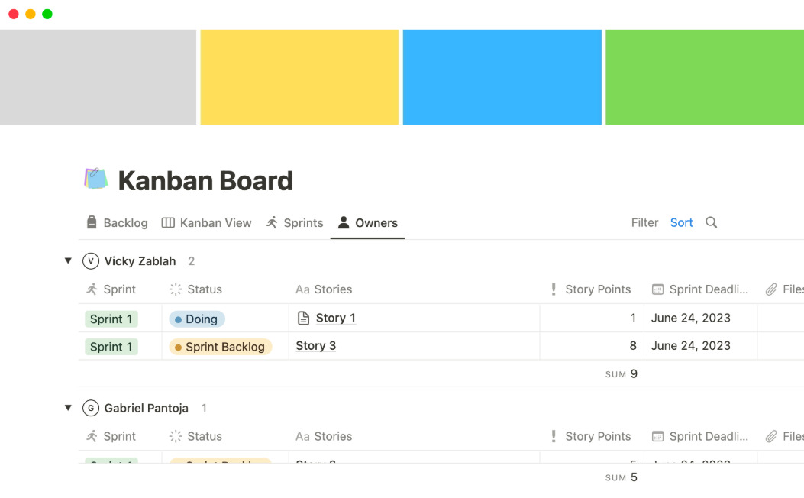

Wdrożenie Notion w ogranizacji

Etapy wdrożenia
1. Analiza potrzeb zespołu
- Określenie celów (zarządzanie projektami, baza danych)
- Sprawdzenie możliwości integracji Notion z obecnymi narzędziami
- Wybór odpowiednich szblonów i struktur
2. Konfiguracja przestrzeni
- założenie przestrzeni
- odanie członków zespołu
- Nadanie ról i uprawnień
- Utworzenie folderów i stron
3. Tworzenie trości i szablonów
- Import istniejącej dokumentacji
- Budowanie bazy wiedzy, checklist, harmonogramów
- Korzystanie z gotowych szablonów lub tworzenie własnych
4. Szkolenie pracowników
- Wprowadzenie do interfejsu i podstawowych funkcji
- Udostępnienie przewodników
- Organizacja szkoleń
5. Testowanie
- Testowe wdrożenia
- Usprawnianie struktury i procesów
6. Pełne wdrożenie
- Rozszerzenie działań na więszą skalę
- Monitorowanie aktywniści
- Wprowadzanie aktualizacji
Integracja z innymi systemami
- Salck
- Google Drive
- GitHub
- API Notion